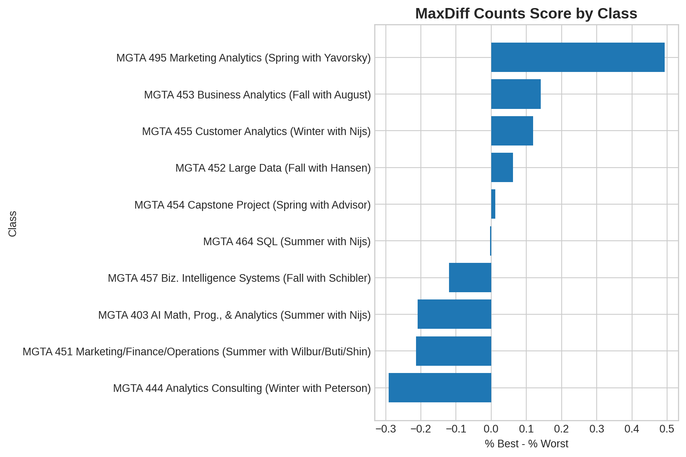
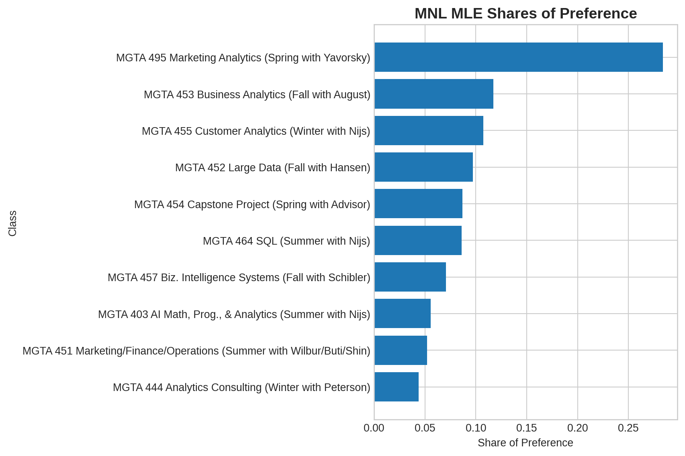
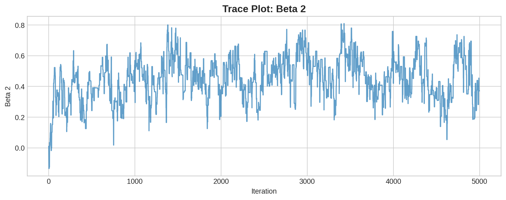
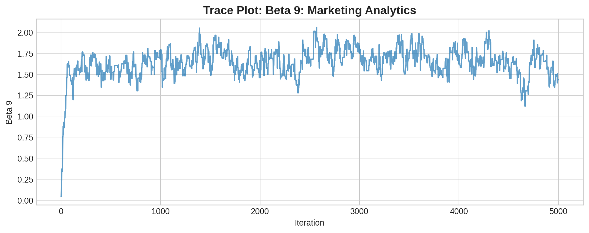
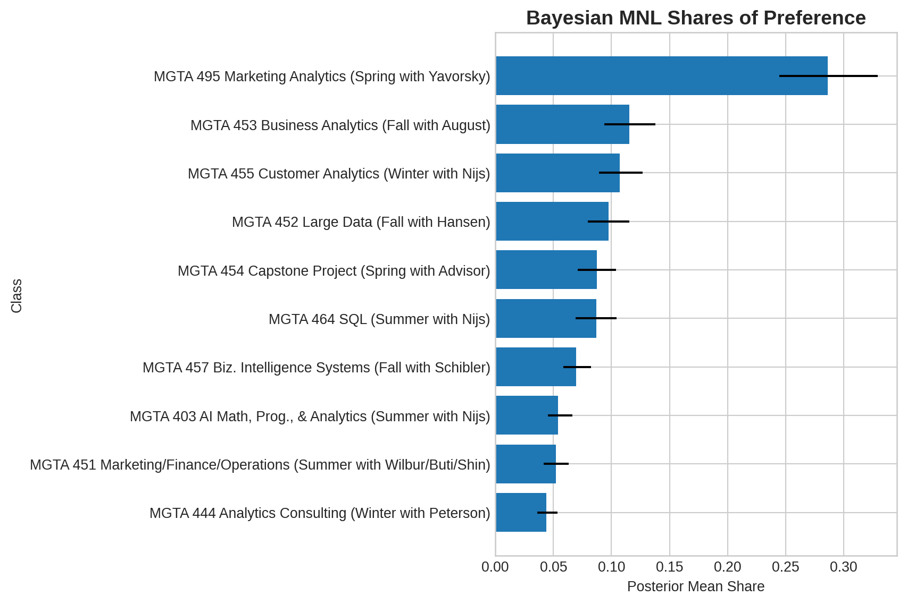
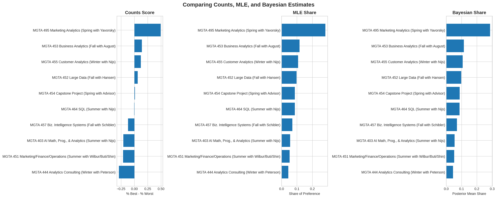

| Quantity | Value |
|---|---|
| Number of respondents | 85 |
| Tasks per respondent | 15 |
| Total items in study | 10 |
| Original rows | 3910 |
MaxDiff Analysis of MSBA Class Preferences
Counts, MLE, and Bayesian Estimation of the MNL Model
Introduction
MaxDiff, also called Best-Worst Scaling, is a survey method for measuring relative preferences. Instead of asking people to rate items on a numeric scale, MaxDiff asks respondents to make trade-offs. On each screen, a respondent sees a small set of items and chooses the most-preferred and least-preferred option.
This approach is useful because people are often better at comparing alternatives than assigning consistent numeric ratings. A 7 out of 10 may mean different things to different respondents, but choosing a best and worst item forces clearer differentiation.
In this assignment, the items are ten core MSBA classes at UCSD Rady. The goal is to estimate student preferences using three methods: a simple counts analysis, a multinomial logit model estimated by maximum likelihood, and the same MNL model estimated using Bayesian methods with a Metropolis-Hastings sampler.
I expect the three methods to agree on the broad ranking of classes, especially at the top and bottom, while differing slightly in how they quantify preference strength and uncertainty.
The Data
The survey data are organized at the item-position level. Each row corresponds to one item shown in one task. The response variable equals 1 if the item was selected as best, -1 if selected as worst, and 0 otherwise.
A first check revealed that the raw data include some rows with item value 11, which does not correspond to one of the ten class labels. To focus on the intended ten-class MaxDiff design, I keep only real items 1 through 10 and then retain valid tasks with four rows, exactly one best choice, one worst choice, and two neutral options.
| Quantity | Value |
|---|---|
| Rows after keeping items 1-10 | 3315 |
| Valid MaxDiff tasks | 680 |
| Rows in valid tasks | 2720 |
| Item | Class | Times Shown |
|---|---|---|
| 1 | MGTA 403 AI Math, Prog., & Analytics (Summer with Nijs) | 273 |
| 2 | MGTA 464 SQL (Summer with Nijs) | 274 |
| 3 | MGTA 451 Marketing/Finance/Operations (Summer with Wilbur/Buti/Shin) | 272 |
| 4 | MGTA 452 Large Data (Fall with Hansen) | 276 |
| 5 | MGTA 453 Business Analytics (Fall with August) | 270 |
| 6 | MGTA 444 Analytics Consulting (Winter with Peterson) | 267 |
| 7 | MGTA 455 Customer Analytics (Winter with Nijs) | 276 |
| 8 | MGTA 454 Capstone Project (Spring with Advisor) | 272 |
| 9 | MGTA 495 Marketing Analytics (Spring with Yavorsky) | 274 |
| 10 | MGTA 457 Biz. Intelligence Systems (Fall with Schibler) | 266 |
The exposure counts are reasonably balanced across the ten classes, which is important because each item should have roughly equal opportunity to be chosen as best or worst.
Counts Analysis
The simplest way to summarize MaxDiff data is to compare how often each class was selected as best versus worst when shown. For each item, I compute:
\[ \text{score}_j = \%\text{best}_j - \%\text{worst}_j \]
A high positive score means the class is frequently chosen as best and rarely chosen as worst. A negative score means the opposite.
| Item | Class | Times Shown | Times Best | Times Worst | % Best | % Worst | Score |
|---|---|---|---|---|---|---|---|
| 9 | MGTA 495 Marketing Analytics (Spring with Yavorsky) | 274 | 147 | 12 | 0.536 | 0.044 | 0.493 |
| 5 | MGTA 453 Business Analytics (Fall with August) | 270 | 93 | 55 | 0.344 | 0.204 | 0.141 |
| 7 | MGTA 455 Customer Analytics (Winter with Nijs) | 276 | 104 | 71 | 0.377 | 0.257 | 0.120 |
| 4 | MGTA 452 Large Data (Fall with Hansen) | 276 | 77 | 60 | 0.279 | 0.217 | 0.062 |
| 8 | MGTA 454 Capstone Project (Spring with Advisor) | 272 | 72 | 69 | 0.265 | 0.254 | 0.011 |
| 2 | MGTA 464 SQL (Summer with Nijs) | 274 | 55 | 56 | 0.201 | 0.204 | -0.004 |
| 10 | MGTA 457 Biz. Intelligence Systems (Fall with Schibler) | 266 | 23 | 55 | 0.086 | 0.207 | -0.120 |
| 1 | MGTA 403 AI Math, Prog., & Analytics (Summer with Nijs) | 273 | 33 | 90 | 0.121 | 0.330 | -0.209 |
| 3 | MGTA 451 Marketing/Finance/Operations (Summer with Wilbur/Buti/Shin) | 272 | 43 | 101 | 0.158 | 0.371 | -0.213 |
| 6 | MGTA 444 Analytics Consulting (Winter with Peterson) | 267 | 33 | 111 | 0.124 | 0.416 | -0.292 |

The counts analysis shows a very clear top choice: MGTA 495 Marketing Analytics has the highest score by a wide margin. Business Analytics and Customer Analytics also perform well. At the bottom, Analytics Consulting has the lowest score, followed by Marketing/Finance/Operations and AI Math, Programming, and Analytics.
From MaxDiff Data to MNL Choices
The counts analysis is intuitive, but it does not explicitly model the choice process. The multinomial logit model provides a more formal approach.
In the MNL model, each item receives a utility coefficient \(\beta_j\). When a respondent sees a set of four items, the probability of choosing item \(j\) as best is:
\[ P(\text{best}=j) = \frac{\exp(\beta_j)} {\sum_{k \in \text{shown}} \exp(\beta_k)} \]
The worst choice is modeled after removing the best item and flipping utilities. An item with lower utility is more likely to be chosen as worst:
\[ P(\text{worst}=j \mid \text{best}) = \frac{\exp(-\beta_j)} {\sum_{k \in \text{remaining}} \exp(-\beta_k)} \]
The MNL model is identified only up to a constant, so I fix \(\beta_1 = 0\) and estimate the remaining nine coefficients.
MNL via Maximum Likelihood
For each task, the log-likelihood combines the probability of the best choice and the probability of the worst choice:
\[ \ell(\boldsymbol{\beta}) = \sum_{\text{tasks}} \left[ \beta_{j_b^*} - \log \sum_{j \in \text{shown}} \exp(\beta_j) - \beta_{j_w^*} - \log \sum_{j \in \text{shown} \setminus \{j_b^*\}} \exp(-\beta_j) \right] \]
where \(j_b^*\) is the item chosen as best and \(j_w^*\) is the item chosen as worst.
Code
def full_beta(beta_free):
return np.concatenate([[0], beta_free])
def mnl_loglik(beta_free, shown_arr, best_arr, worst_arr):
beta = full_beta(beta_free)
shown_utils = beta[shown_arr]
ll = beta[best_arr] - logsumexp(shown_utils, axis=1)
neg_utils = -beta[shown_arr].copy()
best_col = shown_arr == best_arr[:, None]
neg_utils[best_col] = -np.inf
ll += -beta[worst_arr] - logsumexp(neg_utils, axis=1)
return ll.sum()| Item | Class | Beta Hat | Std. Error | Share of Preference |
|---|---|---|---|---|
| 9 | MGTA 495 Marketing Analytics (Spring with Yavorsky) | 1.630 | 0.376 | 0.284 |
| 5 | MGTA 453 Business Analytics (Fall with August) | 0.744 | 0.306 | 0.117 |
| 7 | MGTA 455 Customer Analytics (Winter with Nijs) | 0.656 | 0.299 | 0.107 |
| 4 | MGTA 452 Large Data (Fall with Hansen) | 0.555 | 0.304 | 0.097 |
| 8 | MGTA 454 Capstone Project (Spring with Advisor) | 0.443 | 0.302 | 0.087 |
| 2 | MGTA 464 SQL (Summer with Nijs) | 0.438 | 0.302 | 0.086 |
| 10 | MGTA 457 Biz. Intelligence Systems (Fall with Schibler) | 0.236 | 0.308 | 0.070 |
| 1 | MGTA 403 AI Math, Prog., & Analytics (Summer with Nijs) | 0.000 | NaN | 0.056 |
| 3 | MGTA 451 Marketing/Finance/Operations (Summer with Wilbur/Buti/Shin) | -0.067 | 0.369 | 0.052 |
| 6 | MGTA 444 Analytics Consulting (Winter with Peterson) | -0.239 | 0.448 | 0.044 |

The MNL estimates broadly agree with the counts analysis. Marketing Analytics remains the most preferred class by a substantial margin, while Analytics Consulting appears least preferred.
The estimated shares of preference are especially interpretable. If all ten classes were shown simultaneously, the model predicts that approximately 28% of choices would go to Marketing Analytics alone, far exceeding any other course.
Compared to the counts analysis, the MNL model provides a more principled estimate of latent utility by modeling the underlying choice process directly. Every shown item contributes information, even when it is not selected.
MNL via Bayesian Estimation
Next, I estimate the same MNL model using Bayesian methods. The posterior distribution is proportional to the likelihood times the prior:
\[ \pi(\boldsymbol{\beta} \mid y) \propto L(\boldsymbol{\beta}) \pi(\boldsymbol{\beta}) \]
I use a weakly informative normal prior:
\[ \boldsymbol{\beta} \sim N(0, 10I) \]
Then I sample from the posterior using a random-walk Metropolis-Hastings algorithm.
Code
def log_prior(beta_free):
return np.sum(-0.5 * (beta_free ** 2) / 10)
def log_posterior(beta_free):
return mnl_loglik(beta_free, shown_arr, best_arr, worst_arr) + log_prior(beta_free)
def mh_sampler(beta0, n_iter, step):
K = len(beta0)
draws = np.zeros((n_iter, K))
beta = beta0.copy()
lp = log_posterior(beta)
accept = 0
for t in range(n_iter):
beta_star = beta + np.random.normal(0, step, K)
lp_star = log_posterior(beta_star)
if np.log(np.random.rand()) < (lp_star - lp):
beta = beta_star
lp = lp_star
accept += 1
draws[t] = beta
return {
"draws": draws,
"accept_rate": accept / n_iter
}| Quantity | Value |
|---|---|
| MCMC iterations | 5000.00 |
| Burn-in | 1000.00 |
| Step size | 0.08 |
| Acceptance rate | 0.29 |
The acceptance rate falls within the recommended range for a random-walk Metropolis sampler. This suggests the proposal step size was tuned reasonably well.


The trace plots show the expected “fuzzy caterpillar” pattern after the early burn-in period. The chain appears to stabilize rather than drifting continuously, which provides reasonable evidence that the sampler is exploring the posterior distribution.
| Item | Class | Posterior Mean Beta | Beta CI Lower | Beta CI Upper | Posterior Mean Share | Share CI Lower | Share CI Upper |
|---|---|---|---|---|---|---|---|
| 9 | MGTA 495 Marketing Analytics (Spring with Yavorsky) | 1.670 | 1.370 | 1.929 | 0.286 | 0.244 | 0.329 |
| 5 | MGTA 453 Business Analytics (Fall with August) | 0.757 | 0.490 | 1.016 | 0.115 | 0.094 | 0.138 |
| 7 | MGTA 455 Customer Analytics (Winter with Nijs) | 0.683 | 0.370 | 0.958 | 0.107 | 0.089 | 0.127 |
| 4 | MGTA 452 Large Data (Fall with Hansen) | 0.590 | 0.307 | 0.828 | 0.097 | 0.079 | 0.115 |
| 8 | MGTA 454 Capstone Project (Spring with Advisor) | 0.482 | 0.243 | 0.726 | 0.087 | 0.071 | 0.104 |
| 2 | MGTA 464 SQL (Summer with Nijs) | 0.475 | 0.211 | 0.715 | 0.087 | 0.069 | 0.104 |
| 10 | MGTA 457 Biz. Intelligence Systems (Fall with Schibler) | 0.256 | 0.021 | 0.492 | 0.070 | 0.059 | 0.082 |
| 1 | MGTA 403 AI Math, Prog., & Analytics (Summer with Nijs) | 0.000 | NaN | NaN | 0.054 | 0.045 | 0.066 |
| 3 | MGTA 451 Marketing/Finance/Operations (Summer with Wilbur/Buti/Shin) | -0.039 | -0.311 | 0.217 | 0.052 | 0.042 | 0.063 |
| 6 | MGTA 444 Analytics Consulting (Winter with Peterson) | -0.208 | -0.455 | 0.026 | 0.044 | 0.036 | 0.054 |

The Bayesian estimates closely resemble the MLE estimates, which is expected given the sample size and the weakly informative prior. Posterior means are very close to the MLE estimates, while posterior uncertainty is similar to the MLE standard errors.
A major advantage of the Bayesian approach is that uncertainty in derived quantities, such as shares of preference, is straightforward to compute. Each posterior draw can be transformed through the softmax function, producing a full posterior distribution for each preference share.
Comparing the Three Methods
| Class | Counts Score | Counts Rank | MLE Share | MLE Rank | Bayes Share | Bayes Rank |
|---|---|---|---|---|---|---|
| MGTA 495 Marketing Analytics (Spring with Yavorsky) | 0.493 | 1.0 | 0.284 | 1.0 | 0.286 | 1.0 |
| MGTA 453 Business Analytics (Fall with August) | 0.141 | 2.0 | 0.117 | 2.0 | 0.115 | 2.0 |
| MGTA 455 Customer Analytics (Winter with Nijs) | 0.120 | 3.0 | 0.107 | 3.0 | 0.107 | 3.0 |
| MGTA 452 Large Data (Fall with Hansen) | 0.062 | 4.0 | 0.097 | 4.0 | 0.097 | 4.0 |
| MGTA 454 Capstone Project (Spring with Advisor) | 0.011 | 5.0 | 0.087 | 5.0 | 0.087 | 5.0 |
| MGTA 464 SQL (Summer with Nijs) | -0.004 | 6.0 | 0.086 | 6.0 | 0.087 | 6.0 |
| MGTA 457 Biz. Intelligence Systems (Fall with Schibler) | -0.120 | 7.0 | 0.070 | 7.0 | 0.070 | 7.0 |
| MGTA 403 AI Math, Prog., & Analytics (Summer with Nijs) | -0.209 | 8.0 | 0.056 | 8.0 | 0.054 | 8.0 |
| MGTA 451 Marketing/Finance/Operations (Summer with Wilbur/Buti/Shin) | -0.213 | 9.0 | 0.052 | 9.0 | 0.052 | 9.0 |
| MGTA 444 Analytics Consulting (Winter with Peterson) | -0.292 | 10.0 | 0.044 | 10.0 | 0.044 | 10.0 |

The three methods produce remarkably consistent rankings. Marketing Analytics is overwhelmingly the most preferred class under all approaches, while Analytics Consulting consistently ranks last.
This consistency is reassuring because the methods differ substantially in complexity. The counts analysis is descriptive and simple, the MLE approach explicitly models the MNL choice process, and the Bayesian method produces posterior distributions and credible intervals. Despite these differences, the substantive conclusion is stable.
The main value of the MNL model is that it models the choice process more directly than counts. The main value of the Bayesian model is that it makes uncertainty quantification for derived quantities, such as shares of preference, especially natural.
Discussion
The results suggest that students in the MSBA program strongly prefer Marketing Analytics relative to the other core courses. Business Analytics and Customer Analytics also perform well across all methods, while Analytics Consulting and Marketing/Finance/Operations tend to rank near the bottom.
One notable feature of the results is how consistent the rankings are across all three approaches. The counts analysis, MLE MNL model, and Bayesian MNL model all identify essentially the same ordering of classes. This consistency increases confidence that the findings are not driven by a particular estimation approach.
At the same time, the methods differ in what they contribute analytically. The counts analysis provides a quick descriptive summary that is easy to communicate and interpret. The MLE-based MNL model provides a more rigorous statistical framework that explicitly models the underlying choice process and produces interpretable shares of preference. The Bayesian approach extends this further by providing full posterior distributions and credible intervals, making uncertainty quantification straightforward.
Several caveats remain important. The survey respondents are a self-selected sample of MSBA students, so the results may not generalize beyond this group. In addition, preferences may depend on instructor reputation, prior coursework, scheduling constraints, or where students currently are in the program.
All code was written and modified interactively while experimenting with the likelihood and MCMC implementation. In several places, simplicity and readability were prioritized over computational efficiency in order to better understand the mechanics of the algorithms.
If I had more time, I would explore hierarchical Bayesian extensions that estimate individual-level preferences rather than only population averages. It would also be interesting to compare preferences across different student subgroups, such as incoming students versus graduating students.